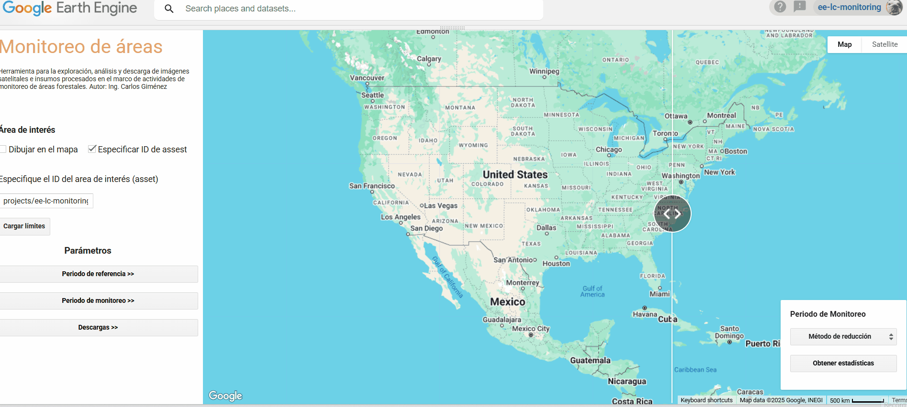

Carlos Giménez
Ingeniero Ambiental | Especialista en SIG y Teledetección | Analista de Carbono y Uso del Suelo
GitHub | LinkedIn | Descargar CV


Ingeniero Ambiental | Especialista en SIG y Teledetección | Analista de Carbono y Uso del Suelo
GitHub | LinkedIn | Descargar CV
Covid-19 en Paraguay: Monitoreo de la incidencia del COVID-19 y el impacto del movimiento poblacional durante la pandemia (OPS & MSPyBS-Paraguay).

Aplicación de procesamiento de imágenes Sentinel-2: Aplicación basada en GEE para procesamiento de imágenes en el marco de los proyectos PINV01-528 y PINV01-530 financiados por el CONACYT-Paraguay. Produce imágenes espacio-temporales basadas en estadísticas por píxel (media, rango, mediana, desviación estándar, entre otras), útiles para modelos de nicho ecológico (ENMs).

App de monitoreo de cobertura del suelo: Herramienta para combinar fuentes de imágenes satelitales, procesarlas y generar estadísticas útiles sobre un área determinada, considerando un período de referencia y un período actual.

Clasificación del uso y cobertura del suelo, análisis de cambios y evaluaciones de precisión en el estado de Acre (Brasil): Apoyo a la contabilidad de reservas de carbono y emisiones de gases de efecto invernadero (GEI), así como a la construcción de líneas base de deforestación para proyectos REDD en la Selva Amazónica. Apoyo a la contabilidad de carbono y emisiones de gases de efecto invernadero (GEI) y líneas base de deforestación para proyectos REDD+ para proyectos REDD+ en la Amazonía.

Clasificación del uso/cobertura del suelo del Chaco Paraguayo 2014 & 2019: Clasificación, análisis de cambio y evaluación de precisión para el desarrollo de proyectos basados en soluciones basadas en la naturaleza (REDD y ARR).

Desarrollo herramientas para recolectar, preprocesar y manejar datos ambientales y espaciales, fomentando flujos de trabajo reproducibles y monitoreo eficiente.
Diseño y mantengo bases de datos geoespaciales para proyectos de monitoreo de carbono y uso del suelo en varios países.